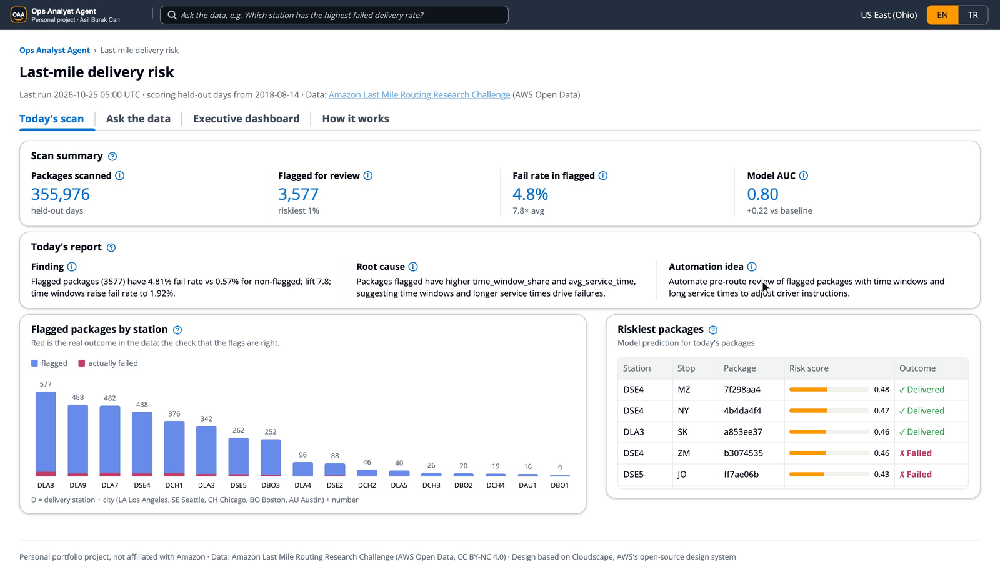
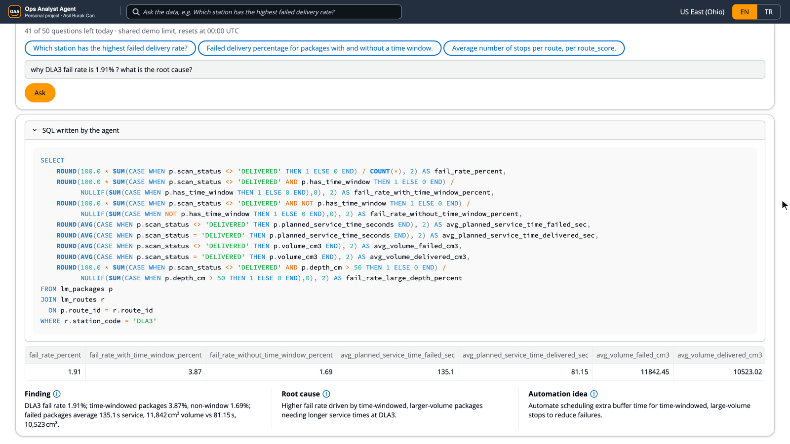
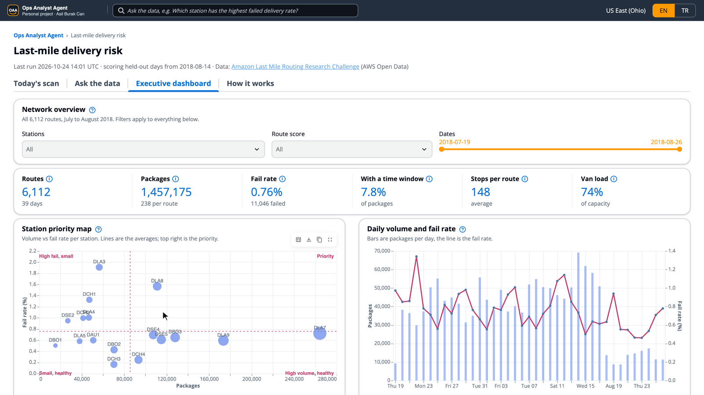
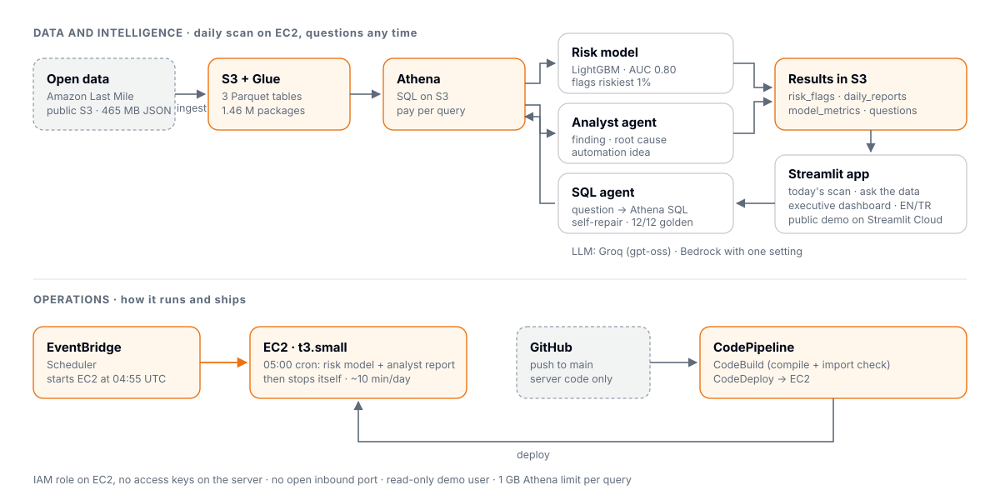
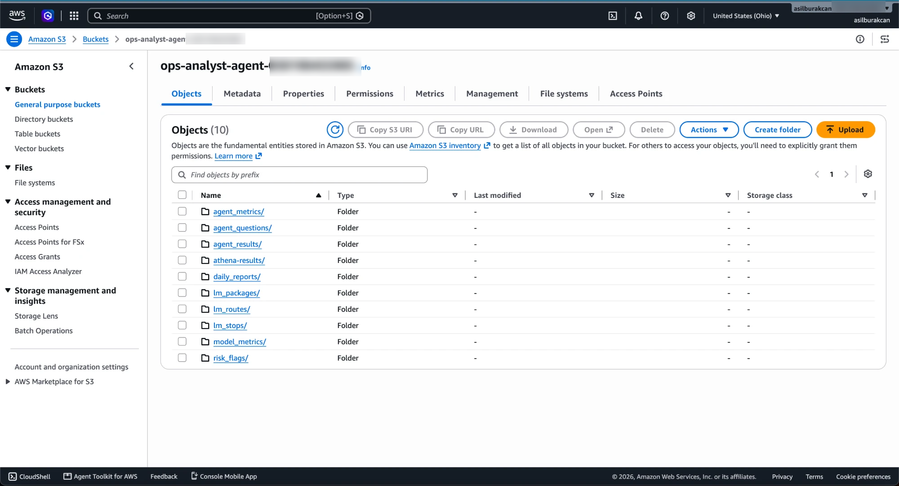
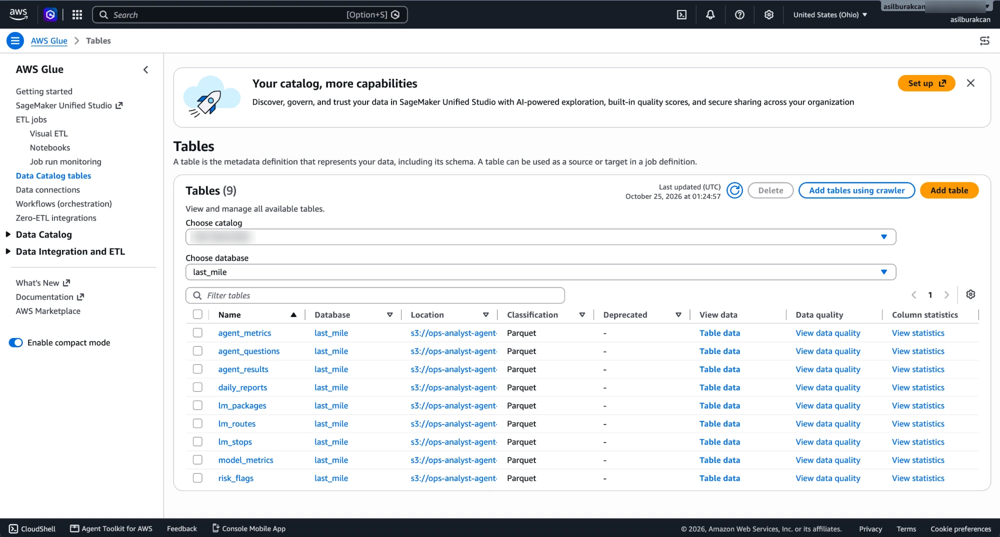
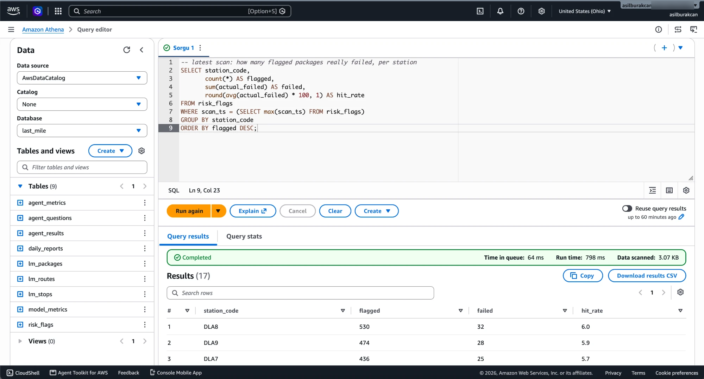
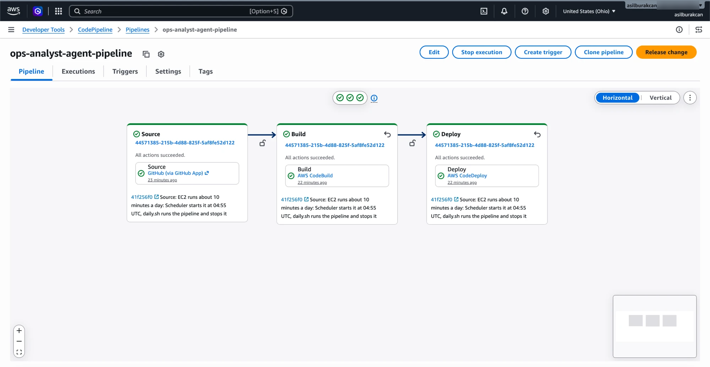
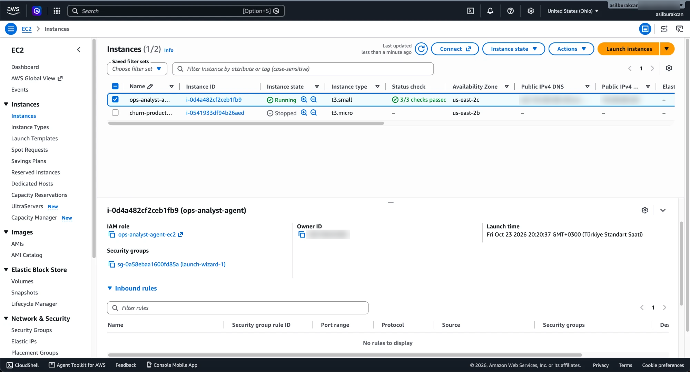

Ops Analyst Agent
An AWS system that flags last-mile packages likely to fail at the door, writes a daily operations report and answers operations questions in plain language.
Personal project by Asil Burak Can · data: 2021 Amazon Last Mile Routing Research Challenge (6,112 real routes, July–August 2018)
Demo video 2 min, narrated
What it does
Flags risky packages
A LightGBM model scores every package before the vans leave and saves the riskiest 1% for review. It uses only what is known before departure.
Writes the daily report
An analyst AI agent turns the scan into a finding, a root cause backed by comparison tables and an automation idea.
Answers questions
A SQL AI agent writes Athena SQL, repairs failed queries and can only read. The analyst AI agent explains the result.
The app



Example question
Question: why DLA3 fail rate is 1.91% ? what is the root cause?
Finding: DLA3 fail rate 1.91%; time‑windowed packages 3.87%, non‑window 1.69%; failed packages average 135.1 s service, 11,842 cm³ volume vs 81.15 s, 10,523 cm³.
Root cause: Higher fail rate driven by time‑windowed, larger‑volume packages needing longer service times at DLA3.
Automation idea: Automate scheduling extra buffer time for time‑windowed, large‑volume stops to reduce failures.
SQL written by the SQL AI agent
SELECT
ROUND(100.0 * SUM(CASE WHEN p.scan_status <> 'DELIVERED' THEN 1 ELSE 0 END) / COUNT(*), 2) AS fail_rate_percent,
ROUND(100.0 * SUM(CASE WHEN p.scan_status <> 'DELIVERED' AND p.has_time_window THEN 1 ELSE 0 END) /
NULLIF(SUM(CASE WHEN p.has_time_window THEN 1 ELSE 0 END),0), 2) AS fail_rate_with_time_window_percent,
ROUND(100.0 * SUM(CASE WHEN p.scan_status <> 'DELIVERED' AND NOT p.has_time_window THEN 1 ELSE 0 END) /
NULLIF(SUM(CASE WHEN NOT p.has_time_window THEN 1 ELSE 0 END),0), 2) AS fail_rate_without_time_window_percent,
ROUND(AVG(CASE WHEN p.scan_status <> 'DELIVERED' THEN p.planned_service_time_seconds END), 2) AS avg_planned_service_time_failed_sec,
ROUND(AVG(CASE WHEN p.scan_status = 'DELIVERED' THEN p.planned_service_time_seconds END), 2) AS avg_planned_service_time_delivered_sec,
ROUND(AVG(CASE WHEN p.scan_status <> 'DELIVERED' THEN p.volume_cm3 END), 2) AS avg_volume_failed_cm3,
ROUND(AVG(CASE WHEN p.scan_status = 'DELIVERED' THEN p.volume_cm3 END), 2) AS avg_volume_delivered_cm3,
ROUND(100.0 * SUM(CASE WHEN p.scan_status <> 'DELIVERED' AND p.depth_cm > 50 THEN 1 ELSE 0 END) /
NULLIF(SUM(CASE WHEN p.depth_cm > 50 THEN 1 ELSE 0 END),0), 2) AS fail_rate_large_depth_percent
FROM lm_packages p
JOIN lm_routes r
ON p.route_id = r.route_id
WHERE r.station_code = 'DLA3'How it works

- Daily: EventBridge Scheduler starts EC2 at 04:55 UTC; at 05:00 cron runs the model and the analyst report, writes the results to S3 and stops the instance.
- CI/CD: server-code pushes run CodePipeline (CodeBuild compile and import check, CodeDeploy to EC2). App and doc changes skip it.
- Safety: IAM role on the server and no access keys, no open inbound port, read-only demo user, 1 GB Athena limit per query, 50 questions a day.
- Honest scope: the dataset is historical, so each run scores the same 13 held-out days. Only the ingest source would change for live data.
Running on AWS









